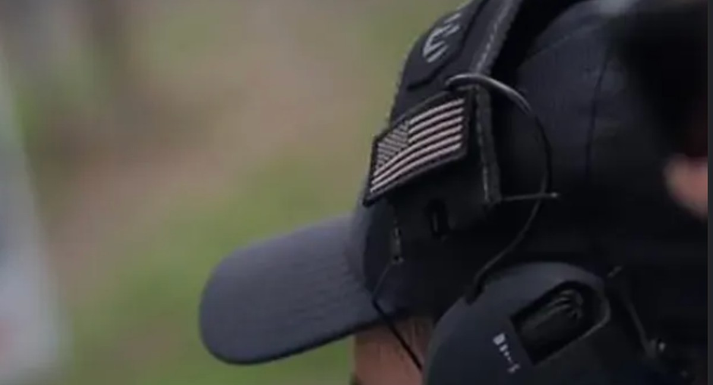

The full day
Learn.
Build.Progress.
Designed as a private, progressive experience rather than a quick range stop. The exact pace can vary with the group and level, but the published concept centres on safety, fundamentals, supervised live fire and visible improvement.

1–8 guests
Solo guests, couples or small groups.About 100 rounds
Substantial trigger time within the day format.Rangsit
North of central Bangkok.Bangkok transfer
Transfer arrangements can be discussed.Photo & video
Professional content options are available.01 · Arrival & briefing
Start with context,
not the trigger.
The day begins with the essential safety framework and a clear understanding of how the session will work. Beginners are introduced step by step before moving into live fire.


02 · Fundamentals
Build a clean
foundation.
Handling, stance, grip, sight alignment and controlled repetitions create the base for everything that comes next.
03 · Supervised live fire
Turn instruction
into confidence.
The experience then becomes practical: repetition, feedback and controlled live fire help turn the briefing into something you can feel and understand.


04 · Progression
Move beyond
the first shots.
As the participant becomes more comfortable, the session can progress into more challenging drills according to level and instructor guidance.


Professional supervision
Guidance is part
of the experience.
The public description presents the experience as professionally supervised and beginner-friendly. Instruction is central to the day, rather than an add-on after choosing equipment.
The approach
Private.
Progressive.
Structured.
The format is suitable for private guests and small groups. The emphasis is on controlled progression and a memorable day rather than a rushed sequence of shots.
PrivateSmall-group format
GuidedProfessional supervision
BeginnerFriendly approach
ProgressiveBuilt around improvement
Experience formats
Essential or
Premium.
Choose the core shooting-day experience, or ask for a broader all-in format with transfer and professional photo/video options around the day.
Current rates are confirmed directly
ESSENTIALCore day
Private shooting experience focused on the day itself.
- Private full-day format
- Professional guidance
- Approx. 100 rounds per guest in the published overview
- Groups of 1–8
Ask current rateDate + group size
Book ↗Expanded
PREMIUMAll-in day
Add the travel and content layer around the shooting experience.
- Core private day
- Transfer arrangements
- Meal arrangements
- Professional photo/video options
Ask current rateDate + group size
Book ↗See the day
before you book.
Browse the full gallery for more of the atmosphere, then send your date and group size when you’re ready.